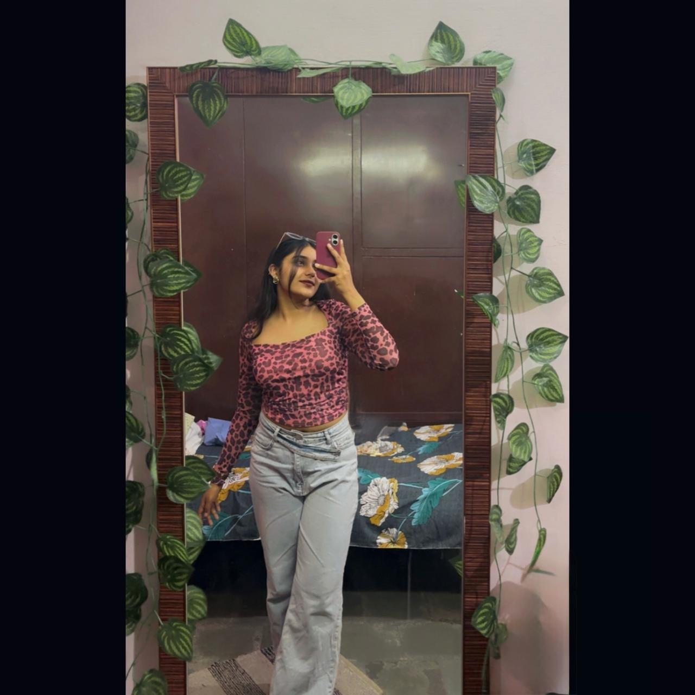
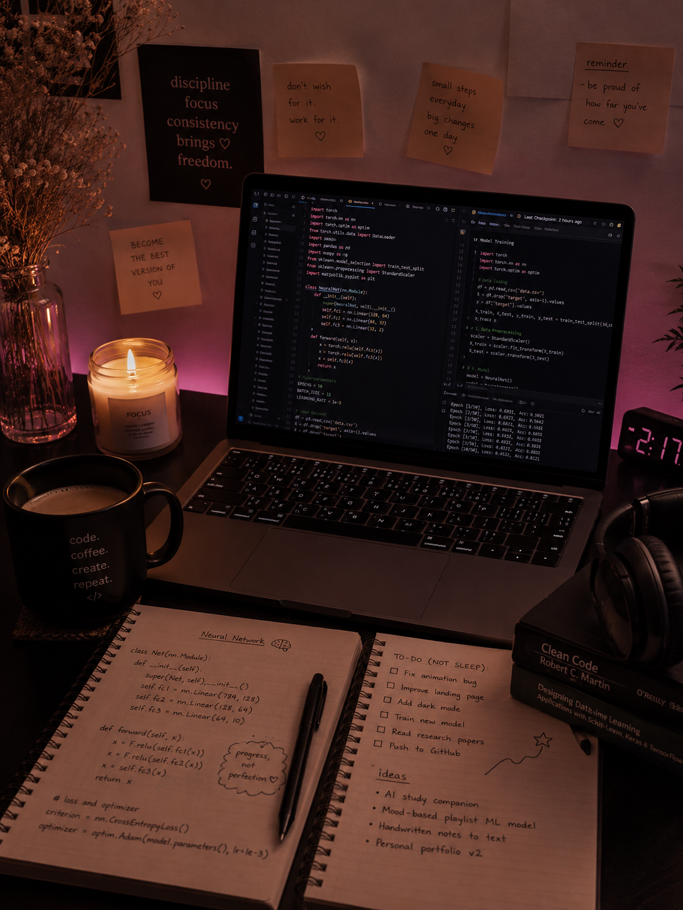
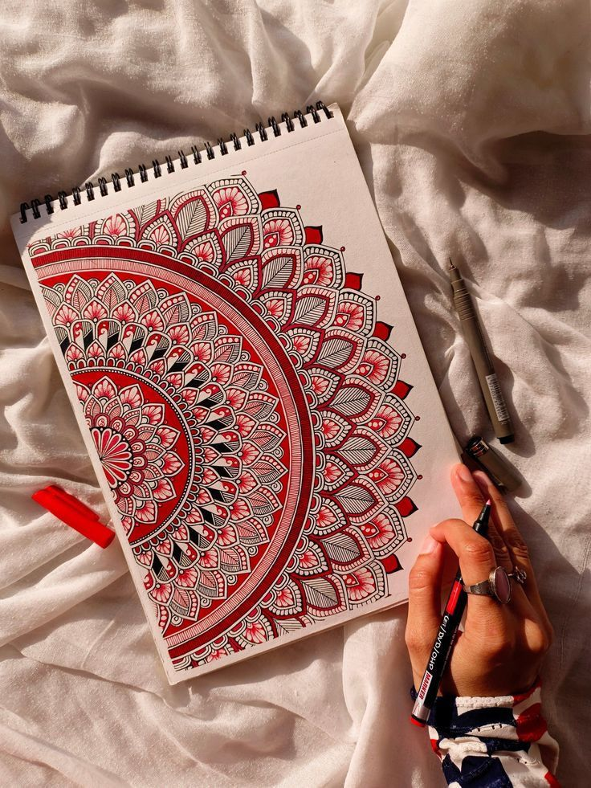

Somewhere between chaos,
creativity, and caffeine.
I never really saw technology as just code.
To me, it always felt more personal — like a language for turning imagination into something you can actually touch.
"If it doesn't feel right, it isn't done yet."
Somewhere between late-night debugging sessions, emotional support playlists on loop, half-finished coffees, and way too many browser tabs — I found myself completely, irreversibly in love with building.
Not just functional things.
Beautiful things. Thoughtful things. Things that feel alive.
The kind of things where the details nobody notices are exactly the ones I spent the most time on.
I'm Samridhi — an AI engineer building things that think, learn, and occasionally surprise even me.
My path into tech wasn't a clean, planned story. It was chaotic. A string of curiosity, rejection, random 2 AM ideas, projects abandoned at 80%, and projects shipped at 3 AM with genuinely shaking hands and quiet, private pride.
But somewhere in the middle of all that? Things started clicking.

Building my first real project. Debugging through the night. Obsessing over tiny UI details nobody else would ever notice — it stopped feeling like "just coding" and started feeling like craft.
I once spent five hours perfecting an animation that plays in 0.8 seconds. That's when I knew this wasn't work anymore. This was something I actually cared about.
These days, I build AI-powered applications, explore machine learning pipelines, design interfaces I'm actually proud of, and occasionally spend an unreasonable amount of time on a detail that will take you exactly 0.3 seconds to not notice.
I work at the intersection of intelligence and aesthetics — because beautiful systems are better systems, and I refuse to believe otherwise.

Outside of tech, I make mandala art — because symmetry is just a different kind of logic, and I've always been obsessed with both.
I romanticize ordinary things. Night walks. Café playlists. The specific quiet of 2 AM when the rest of the world stops and you can finally actually think.
I try to build the same way — with intention. With care. With a little beautiful obsession.
I'm still figuring things out. Still learning what I don't know yet. Still becoming.
But I show up. I build things. I make them better. I do it again.
That's enough. That's everything.
I'm not trying to be the loudest person in the room.
I just want to build beautiful things, solve meaningful problems, and become someone younger me would genuinely be proud of.